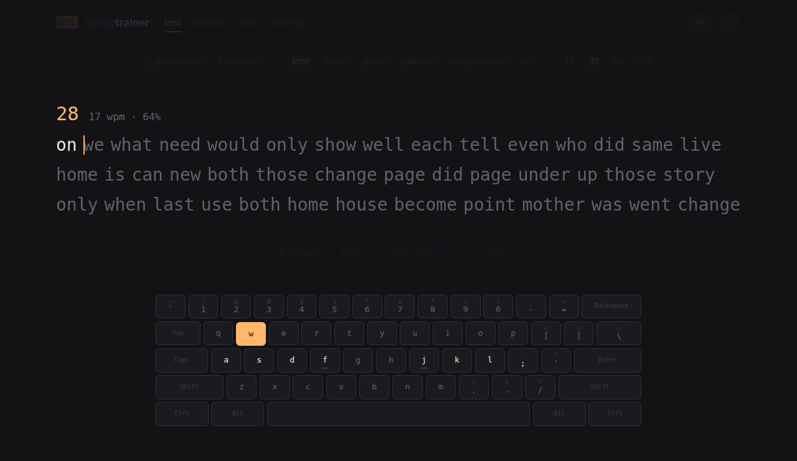
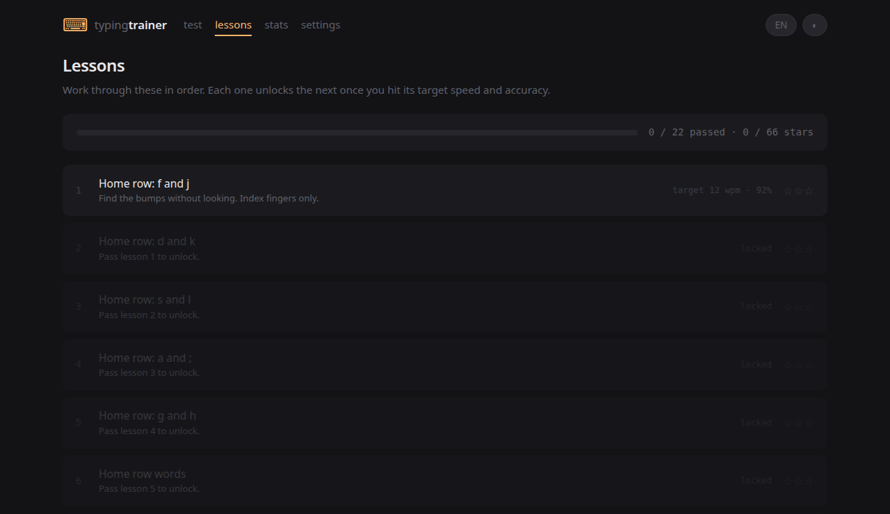

free · offline · no accounts
Type without looking down. Then keep getting better.
Typing is the layer underneath emails, notes, essays, code and searches. This trainer takes you from the home row to fluency — and then keeps working, by turning your own slowest words and key transitions into practice.
Nothing to install. Nothing leaves your browser.
why bother
A few seconds a sentence, thousands of times over
Most people learn to type without ever really learning how. They look down, search for the next key, correct a mistake, and repeat. It works — and it adds a little friction to nearly every digital task they do.
The return compounds. Typing is rarely the main task; it is the layer underneath the main task. Saving a few seconds on one sentence means nothing. Saving it across thousands of sentences is worth more than the hours you spend learning.
And the win is not only speed. A fast typist still loses time to constant corrections. What actually helps is speed, accuracy and consistency together — which is exactly what this trainer measures.
“Instead of splitting attention between finding keys and developing an idea, you can focus on the idea itself. Your hands become less of a bottleneck between thought and text.” from Touch Typing Is an Investment That Pays You Back Every Day
how it works
Learn the movement, measure it, then drill what is slow
Accuracy comes before speed. Every rushed mistake teaches your fingers the wrong movement, so the trainer is built to make the wrong movements visible rather than to hand out a big number.
Start on the home row
Twenty-two lessons introduce a few keys at a time. Each unlocks the next only when you hit its target speed and accuracy, so you never build on a shaky foundation.
Test in real language
Timed runs, word counts, quotes, key-pattern chunks or open-ended zen mode. Live WPM, accuracy and consistency, with a second-by-second chart at the end.
Drill your weak spots
The trainer ranks your slowest words, key pairs and keys — then builds repetition drills out of them. Practice goes where the time is actually being lost.
preview
What it looks like
Eight colour themes, an on-screen keyboard that mirrors finger colours, and no chrome you did not ask for.


what you get
Everything, and nothing else
Adaptive drills
Repetition built from your own slowest words, key pairs and keys.
Per-key statistics
A heatmap by accuracy or by speed, plus a ranked table of what is costing you time.
History that keeps
Speed over time, personal bests per mode, and lifetime counters that survive the history cap.
English and Spanish
Interface and practice text both, with accented input, dead keys and several layouts.
Works offline
Cached after the first visit and installable as an app. A flight is a practice session.
Private by construction
No server, no accounts, no analytics. Your results live in your browser; export them whenever.
Eight themes
Carbon, paper, nord, dracula, solarized, matrix, ocean and sepia. Light and dark both.
Keyboard-first
Tab restarts, Esc backs out, Enter starts the next one. Your hands never have to leave home.
practice text
Ideas worth repeating
Typing exercises usually use random words. They train the fingers and give the mind nothing. Quote mode draws instead on Stoic and other philosophical writing, so while your hands repeat key patterns you are reading about discipline, attention and what is actually under your control.
It suits the practice. Improving accuracy means accepting mistakes without frustration and going back to the exercise — and typing a sentence is a far more active way of meeting it than scrolling past.
questions
The short answers
Is it free?
Yes — free and open source under the MIT licence. No accounts, no adverts, no paid tier, nothing to unlock.
Where does my data go?
Nowhere. Results, lesson progress and settings sit in your browser's local storage; there is no server to send them to. Settings → your data exports the lot as JSON so you can move it to another machine.
Does it work offline?
After the first visit, yes. A service worker caches the whole app, and you can install it so it opens like any other application.
Which languages and layouts?
English and Spanish for both interface and practice text, including accented characters and dead keys, across several common keyboard layouts.
I already touch type. Anything here for me?
That is precisely who it was built for. Once the fundamentals are automatic, what remains is a set of specific slow words and awkward transitions — the trainer finds those and drills them, instead of making you retype text you already handle well.
How long until I see a difference?
Expect to be slower for the first few sessions: you are replacing an improvised habit with a deliberate one. Short daily sessions beat long occasional ones, and accuracy should lead speed the whole way.
A small investment in a tool you already use every day
Your own hands. Open it and practise — the first lesson takes about a minute.